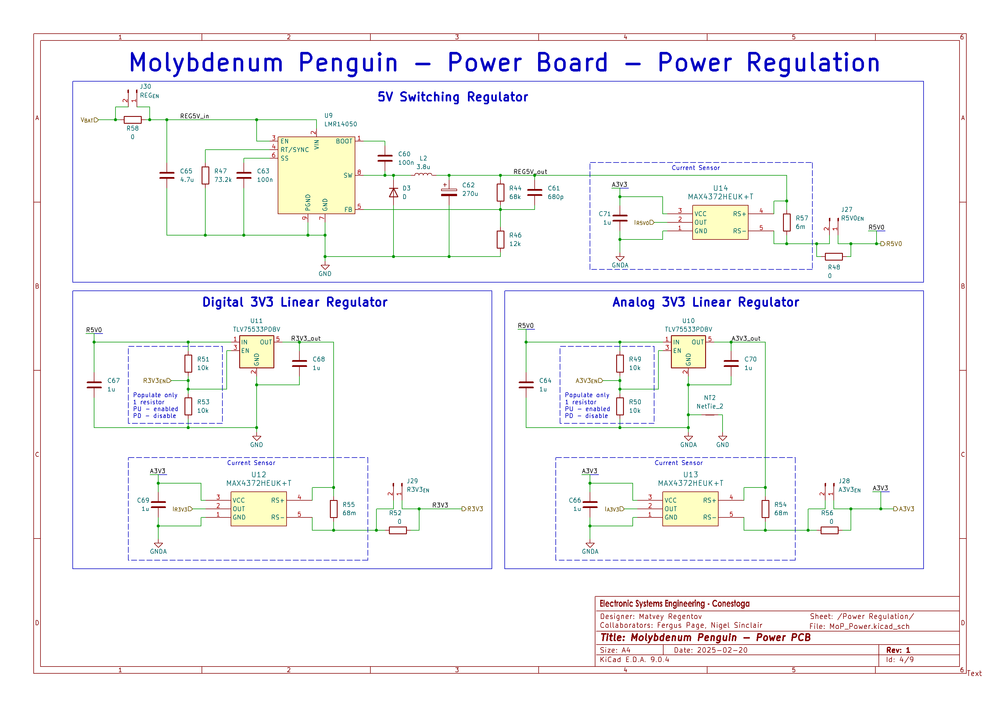

Detailed Phase 2 planning with the team
The LiF Team conducted an online meeting to assign tasks for Phase 2 deliverables. We mainly focused on PCB development planning and decided on our contingency plans for hitting primary deliverables without PCBs. I made an Obsidian document with requirements for each sub-system of the PCB. Exported PDF is available here. There rest of this logbook entry section contains the same information converted to HTML format using ChatGPT.
Team had an online meeting to finalize the plans for phase 2 of the project (weeks 7-11 of the semester). Project Charter states the primary features and deliverables that we must get done:
- Server on RPi
- Website controls for the elevator with a GUI
- Authentication and authorization
- Database logging
- Audio signals for visually-impaired users (can be played from SC)
We also need to catch up on outstanding tasks from phase 1:
- ToF sensor
- EC LCD screen
Plan to fill the primary requirements:
- use I2C ToF sensor which we have on hand (Matvey)
- add LCD to EC (Matvey)
Other tasks for the reading week:
- Rita - get started on databases
- Nick - more website work and GUI controls
Phase 2 PCB Design Timeline
The team will collaboratively design a replacement FC/CC PCB using KiCAD 9.0.9 software. Lead time on PCBs requires us to focus on this task during the reading week (week 8). Approximate timeline for PCB implementation:
- PCB design done by 07-05
- PCBs arrive around 07-10 to 07-13
- Assemble PCBs 07-13 to 07-17
Phase 2 PCB Design Collaboration
PCB functionality is divided into several sub-systems, and each sub-system is assigned to one team member. Each team member will:
- design a schematic sheet using KiCAD 9.0.9 software
-
provide documentation on their design:
- justify passive component values
- provide references
- define pin assignment requirements for their sub-system
- each schematic sheet will be verified by one other member
Then, Matvey will merge the schematic sheets together and route the PCB. As a mechanical design lead, Matvey will come up with an outline of the PCB and component placement to work well with the structure of the elevator.
Phase 2 PCB Design Team Standards
- Passive components must be SMD 0805 size (metric code: 2012) unless there is a reason to deviate from this standard size. This will simplify component sourcing and PCB assembly.
- Components must be in-stock on DigiKey and have active production status unless there is a reason to deviate from this.
- No-lead IC packages must be avoided unless a substitute package/component does not exist.
- Use SMD components when possible. Through-hole components may be used for mechanical rigidity.
Phase 2 PCB Design Modules and Tasks
Italicized headings are primary requirements for the PCB. Non-italicized headings are additional features we want to include.
Buttons/LEDs - Nick
The FC/CC boards require push buttons for user input to select a floor and a set of LEDs to indicate user selection/elevator position.
Primary requirement:
- 3x push buttons
- 3x LEDs for floor selection
- 3x LEDs for cabin position indication. These pins can be reused for the 7-segment display.
-
1x toggle switch/limit switch connector
- CC needs to have a toggle switch to simulate "doors are open"
- door servos, an additional feature, will require us to replace the toggle switch with a limit switch
- add a simple connector to the board to make toggle/limit switches interchangeable
Optional features:
-
extra sets of buttons/LEDs for use with more than 3 floors
- This will depend on GPIO availability and PCB footprint
CAN connector - Rita
Current Nucleo Shields use DB9 connector for CAN bus, which is a defined and existing standard. Our team wants to experiment with USB-C connector for CAN to assess the feasibility of utilizing USB-C cables for CAN bus signal and USB Power Delivery function. This feature will also help reduce labour of wiring CAN-based systems, as USB connectors are readily available. Furthermore, we want to include 2 connectors on each PCB to eliminate the need for branching cables and use a simpler pass-through daisy-chained connection topology. A detailed overview of the connection topology and power path is shown in the USB-C PD Trigger section below.

Proposed pinout CAN:
- D+ is used as CANH
- D- is used as CANL
D+ and D- are a differential pair, but USB's characteristic impedance is 90ohm compared to 120 ohm for a CAN bus. Assume this will not affect our system, which uses short cables at low bitrates.
Additional USB-C connector connections/functions:
- VBUS and Gnd pins are used to provide power to the PCB from upstream port and will supply power to downstream port.
- CC1 and CC2 pins are used by USB PD protocol to negotiate VBUS voltage.
In order to make our PCBs compatible with standard CAN-DB9 systems, we will also keep 1x DB-9 connector on each PCB.
Requirements:
- 2x female horizontal USB-C connectors for CAN bus
-
1x 120Ohm termination resistor for CAN
- use a DIP/toggle switch or a solder bridge to make this termination resistance optional, such that any board can be terminating or not on the CAN bus
-
1x DB-9 connector for CAN bus backup
-
optionally choose a footprint compatible with
5747844-4(DigiKey PN:A32117-ND) since the tool room can supply compatible components
-
optionally choose a footprint compatible with
- 1x Double-Pole switch to disconnect CAN bus from upstream USB-C port to allow that port to be used with standard USB devices
CAN Transceiver - Rita
The PCB must include a CAN bus transceiver. There are not specific requirements for the transceiver as of now, but they may appear during further research into the topic.
Safe-to-use reference components/designs:
-
Molybdenum Penguin Communications PCB
- uses
MCP2542FDxMF
- uses

-
STM32 Nucleo Elevator Shield
- uses
TCAN1051HVDRQ1 - schematics are available on Engineering Project VI course shell
- uses
MCU - Matvey
The team decided to use ESP32 MCU modules as they are easy to implement on a PCB and have the required features for this system. ESP32-S3 module with castellated edges will be used. USB and JTAG will be used for flashing/debugging firmware.
Requirements:
-
ESP32-S3 module
- castellated edges to make soldering/inspection easier
- PCB antenna to provide future wireless capabilities at a reduced part count
-
Firmware flashing
- USB programming interface using USB-C connector
- JTAG programming/debugging interface
- Reset button
- DAC for sound signals
- ADC for load cell measurements
- PWM for servos
- GPIOs for the rest of the PCB functions
- TBD...
Power Regulator - Matvey
Molybdenum Penguin power regulation circuit will be reused on this PCB design, as it was tested and verified before.

Note that only 1x 3.3V regulator will be used, unlike the original design.
USB-C PD Trigger - Nick
One of the benefits of using USB-C for CAN bus, as stated above, is USB Power Delivery feature, which will allow to supply higher voltages on VBUS, allowing each board to draw more power. However, USB PD standard includes a lot of safety provisions[2] which need to be handled properly to ensure our PCBs function and are safe to use with non-CAN USB devices. A connection topology and power path diagram is shown below.
Note that each node must act as a USB PD sink on the upstream port and USB PD source on the downstream port. This way voltages higher than 5V are not automatically exposed to all the nodes, and successful PD negotiation is required between each board in the chain.
The diagram above shows how node 1 can be used as the power source for the whole system. Node 1 has D+ and D- pins disconnected on the upstream USB-C port via a double-pole switch. This way it is safe to plug in any standard USB PD chargers/power supplies without exposing them to CAN signalling.
A successful power-up PD negotiation sequence would follow these steps:
- User plugs in a USB cable from PD charger to upstream port on Node 1
- PD charger provides 5V to Node 1, which powers on the system and PD trigger IC. This probably also results in 5V being supplied to the downstream USB-C port on Node 1
- Node 1 (sink) and PD charger (source) negotiate 12V voltage on VBUS
- Now Node 1 has 12V supplied to it
- Node 2 (sink) and Node 1 (source) negotiate 12V voltage on VBUS between the two nodes
- etc.
Additionally, each node will have a standard USB-C connector for MCU programming purposes, and it would be beneficial to allow that port to act as a PD sink for alternative power supply connection. A toggle switch or similar should be used to prevent 2 sources from powering the system together.

Requirements:
-
2x USB PD trigger ICs
- one acts as a sink controller on upstream USB-C CAN port
- another acts as a source controller on downstream USB-C CAN port
-
Selected PD trigger ICs:
- must handle 12V
- may handle more than 12V
- may be AVS- or PPS-compatible (Adjustable Voltage Source and Programmable Power Supply)[1]
- Safe operation when standard USB devices are connected to the PCB
Servos - Matvey
Servos will allow us to implement moving elevator doors and an emergency brake system for the elevator cabin. Door servos will require a limit switch to be used to detect door open/closed state to stay compatible with base project requirements.
Requirements:
- 2x connectors for micro RC Servos
Accelerometer - Matvey
An accelerometer may be used to detect a fault condition that results in the elevator cabin falling uncontrollably. This will trigger an emergency brake servo to activate and slow down the cabin.
Requirements:
- MEMS Accelerometer IC capable of detecting acceleration changes quickly
- optionally, interrupt generation by the accelerometer IC upon acceleration value passing a configurable threshold
Load cell - Rita
A load cell may be used to detect presence of a payload in the elevator cabin. Load cells require special signal conditioning circuitry to provide accurate readings.
Requirements:
-
load cell signal conditioning circuit
- single supply rail operation, 5V or 3.3V
- 0-3.3V analog output voltage
-
load cell component
- 0.5-1kg max weight rating
Audio - Nick
The base project requirements include an audio signaling feature for visually-impaired users of the elevator. However, the base requirements allow the speaker to be connected to SC, which would be far from users in a proper elevator system. So, we aim to include a simple audio amplifier on CC/FC PCBs to alert the user about the state of the elevator with a small speaker.
Requirements:
- ADC or I2S input
- low power output for selected speaker component
- single-supply rail operation, 3.3V or 5V
7-segment-display - Nick
The use of LEDs to indicate floor position may be unintuitive and difficult to scale. As such, we aim to include a 7-segment-display on our FC/CC PCBs.
Requirements:
- 7 segment display component
-
signal to the display is either:
- directly driving each segment with 7x MCU GPIO pins
- using binary-coded decimal decoder IC to reduce pin count to 4x GPIO pins
- using shift register ICs to reduce pin count to 3x GPIO pins (clock, data, reset) and make the display extendable to an arbitrary number of digits
Phase 2 BLDC Motor
Currently-used stepper motor provides an unrealistic representation of real elevator systems, which often use 3-phase motors. Using a BLDC motor would allow us to more closely replicate an elevator system. Additionally, a BLDC motor with Field-Oriented Control algorithm will allow us to sense torque produced by the motor to detect payload presence in the elevator cabin. Matvey will aim to implement a BLDC FOC driver PCB for the elevator platform alongside regular FC/CC PCBs that the team is developing.
Phase 2 summary
The team will focus on PCB design during the reading week, and order PCBs no later than 2026-07-06. Week 9, the first week back from the reading week, will be spent implementing the primary project requirements while PCBs are being manufactured. The team will record a video demonstration of the primary features before new PCBs are installed. Once PCBs arrive, the team will assemble 6 units, 4 primary and 2 backup, and begin integration of the new PCBs before Phase 2 ends.
Sources
- Texas Instruments, USB Type-C® and USB Power Delivery: Designing for both Extended Power Range and battery-powered systems, Technical Article: https://www.ti.com/lit/ta/ssztd49a/ssztd49a.pdf
- Texas Instruments, An Engineer's Guide to USB Type-C, e-book: https://www.ti.com/lit/eb/slyy228/slyy228.pdf